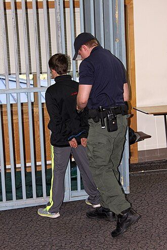
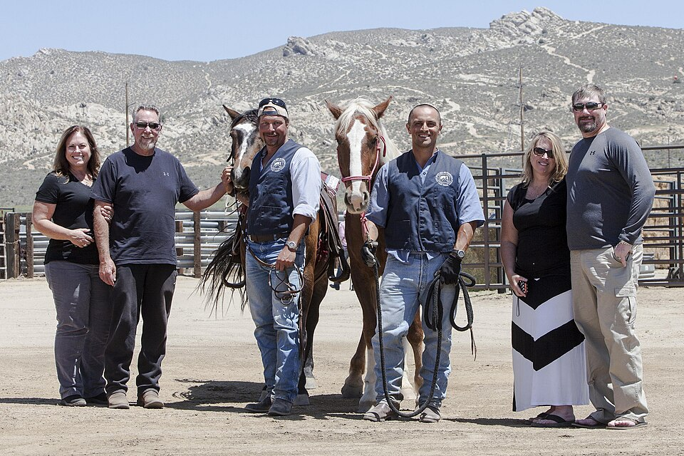

Explore the structure, procedures, and ongoing reforms of Texas criminal justice!
Enter your name to begin your journey through the Texas criminal justice system:
Learn how criminal trials proceed from charges through jury deliberation and sentencing.
Understand how Texas categorizes crimes from capital felonies to Class C misdemeanors.
Explore the right to counsel and how Texas provides lawyers for those who cannot afford them.
Discover Texas's constitutional protections for crime victims and the balance with defendants' rights.
Examine challenges facing Texas criminal justice including bail reform and wrongful convictions.
Understand protections against self-incrimination, double jeopardy, and due process.
Learn about trial rights, assistance of counsel, and protections against cruel punishment.
Explore the structure of TDCJ, the largest prison system in the United States.
Master the essential vocabulary of Texas criminal justice.
View your final score, grade, and detailed performance breakdown
By the end of this chapter, you will be able to explain the purpose, structure, and behavior of the criminal justice system in Texas.
Typically a person charged with a serious crime will have a brief hearing before a judge to be informed of the charges against him or her, to be made aware of the right to counsel, and to enter a plea. Other hearings may be held to decide on the admissibility of evidence seized or otherwise obtained by prosecutors.
If the two sides cannot agree on a plea bargain during this period, the next stage is the selection of a jury. A pool of potential jurors is summoned to the court and screened for impartiality, with the goal of seating twelve (in most states) and one or two alternates. All hear the evidence in the trial; unless an alternate must serve, the original twelve decide whether the evidence overwhelmingly points toward guilt or innocence beyond a reasonable doubt.
+15 points! You're learning courtroom procedure!
In the trial itself, the lawyers for the prosecution and defense make opening arguments, followed by testimony by witnesses for the prosecution (and any cross-examination), and then testimony by witnesses for the defense, including the defendant if he or she chooses. Additional prosecution witnesses may be called to rebut testimony by the defense. Finally, both sides make closing arguments. The judge then issues instructions to the jury, including an admonition not to discuss the case with anyone outside the jury room.
+15 points! You're understanding the jury process!
The jurors pick a foreman or forewoman to coordinate their deliberations. They may ask to review evidence or to hear transcripts of testimony. They deliberate in secret and their decision must be unanimous; if they are unable to agree on a verdict after extensive deliberation, a mistrial may be declared, which in effect requires the prosecution to try the case all over again. A defendant found not guilty of all charges will be immediately released unless other charges are pending.
If the defendant is found guilty of one or more offenses, the judge will choose an appropriate sentence based on the law and the circumstances. In the federal system, this sentence will typically be based on guidelines that assign point values to various offenses and facts in the case. If the prosecution is pursuing the death penalty, the jury will decide whether the defendant should be subject to capital punishment or life imprisonment.
The reality of court procedure is much less dramatic and exciting than what is typically portrayed in television shows and movies. Nonetheless, most Americans will participate in the legal system at least once in their lives as a witness, juror, or defendant.
By the end of this section, you will be able to understand how Texas classifies criminal offenses.
The vast majority of crimes are prosecuted at the state level. In every state, crimes are put into distinct categories. The categories are usually "felony" and "misdemeanor." Decisions on crime classification are made by state legislators; the determination focuses on the seriousness of the crime.
+15 points! You're understanding crime classifications!
Capital Felonies are the most serious crimes in Texas, punishable by life without parole or the death penalty. Examples include: murder of a law enforcement official, prison guard, or firefighter on duty; murder committed with other types of felonies; murder for hire; mass murder; and murder of someone under the age of 10. First-degree felonies include murder and theft of property worth over $200,000, punishable by 5-99 years in prison and up to $10,000 fine.
| Offense | Punishment | Court |
|---|---|---|
| Capital Felony Murder of law enforcement, mass murder |
Life without parole or death penalty | District |
| First-degree Felony Murder; theft over $200,000 |
5-99 years; up to $10,000 fine | District |
| Second-degree Felony Manslaughter; theft $100,000-200,000 |
2-20 years; up to $10,000 fine | District |
| Third-degree Felony Online impersonation; theft $20,000-100,000 |
2-10 years; up to $10,000 fine | District |
| State Jail Felony Possession 4oz-1lb marijuana; theft $15,000-20,000 |
180 days-2 years; up to $10,000 fine | District |
| Class A Misdemeanor Resisting arrest; theft $500-1,500 |
Up to 1 year jail; up to $4,000 fine | County |
| Class B Misdemeanor Terroristic threat; theft $20-500 |
Up to 180 days jail; up to $2,000 fine | County |
| Class C Misdemeanor Theft under $20; underage alcohol possession |
Maximum $500 fine only | JP/Municipal |
+15 points! You're learning the court structure!
In Texas, the court of original jurisdiction depends on the severity of the crime. District Courts handle all felony cases—from capital felonies down to state jail felonies. County Courts handle Class A and Class B misdemeanors. Justice of the Peace Courts and Municipal Courts handle Class C misdemeanors, which carry only fines (no jail time). This division ensures that more serious cases receive more judicial resources and attention.
By the end of this section, you will be able to explain the right to counsel in Texas.
People accused of a crime can represent themselves or may retain a criminal defense lawyer to represent them. Since the famous Supreme Court case Gideon v. Wainwright (1963), persons too poor to hire a lawyer have the constitutional right to have an attorney appointed to represent them in serious cases.
How exactly that counsel is provided, however, was left to states to decide, and in Texas, this "how" gets further relegated to the state's 254 counties — meaning that each county decides how to appoint, and pay, lawyers for the poor. Last fiscal year, there were roughly 474,000 indigent cases in Texas.
+15 points! You're understanding indigent defense!
There are 19 public defender's offices, which 39 counties rely on in some capacity, but the majority of counties contract with private lawyers, who are generally paid a modest flat fee per case. This is the most common way states fulfill their Gideon v. Wainwright obligations. More than 150 counties also participate in a public defender program for death penalty cases. In 2017, the average court-appointed lawyer in Texas made only $247 per misdemeanor case and $598 per felony.
Because court-appointed fees are often so low, lawyers are forced to take on a multitude of cases just to make a living. Some overburdened lawyers contribute to so-called "plea mills," in which critics say they encourage defendants to plead guilty because they are either too swamped to investigate claims or incentivized not to. In Travis County, for instance, court-appointed lawyers are paid $600 for a felony case whether they secure a plea deal or get the charge dismissed.
+15 points! You're examining conflicts of interest!
In Texas, indigent defense is largely overseen by judges. Contrary to the American Bar Association's principles of public defense, which call for defense lawyers to be independent of the judiciary, judges in most Texas counties decide which lawyers get cases, how much they are paid, and whether their motions have merit. Given that judges are elected based, in part, on the efficiency of their courts, this is an inherent conflict of interest. As one lawyer noted: "Whatever the judge wants to do, it's probably not acquit your client. The judge wants to move the docket. The judge wants to get reelected."
Texas has long been known as a law and order state. The United States Constitution has a Bill of Rights that guarantees certain rights for those accused of crimes. While the Texas Constitution has a Bill of Rights with an extensive list of rights for the accused, it is one of the only states that follows that list with a specific list of rights for crime victims.

(a) A crime victim has the following rights:
+15 points! You're learning about victim protections!
On the request of a crime victim, the crime victim has the following rights:
+15 points! You're understanding the legal framework!
The state, through its prosecuting attorney, has the right to enforce the rights of crime victims. The legislature may enact laws to provide that a judge, attorney for the state, peace officer, or law enforcement agency is not liable for a failure or inability to provide a right enumerated in this section. Importantly, the failure or inability of any person to provide a right or service enumerated in this section may not be used by a defendant as a ground for appeal or post-conviction writ of habeas corpus. A victim or guardian or legal representative of a victim has standing to enforce these rights but does not have standing to participate as a party in a criminal proceeding or to contest the disposition of any charge.
Texas has a reputation for long sentences, tough prisons (most, until recently, without air conditioning) and tough-on-crime judges. However, serious questions have been raised about the fairness of the system.
"Twenty years ago, not quite one-third of the state's jail population was awaiting trial. Now the number is three-fourths. Liberty is precious to Americans, and any deprivation must be scrutinized... Many who are arrested cannot afford a bail bond and remain in jail awaiting a hearing. Though presumed innocent, they lose their jobs and families, and are more likely to re-offend. And if all this weren't bad enough, taxpayers must shoulder the cost—a staggering $1 billion per year."
+15 points! You're examining bail reform!
Chief Justice Hecht cited a case from The Dallas Morning News: A middle-aged woman arrested for shoplifting $105 worth of clothing for her grandchildren sat in jail almost two months because bail was set at $150,000—far more than all her worldly goods. Was she a threat to society? No. A flight risk? No. Cost to taxpayers? $3,300. In 2017, Federal District Judge Lee Rosenthal ruled Harris County's bail system unconstitutional. A proposed 2019 settlement would essentially end Harris County's practice of requiring bail for all but the most violent offenders.
+15 points! You're learning about exonerations!
Texas has long led the nation in the number of people it exonerates, or clears of convictions, based on evidence of innocence. Since 2010, more than 200 people have been exonerated in Texas—that's more than twice as many as any other state during the same period. Concerns about wrongful convictions are often related to methods police and prosecutors use, including issues with crime labs, DNA technology, and procedures. Dallas County established the first Conviction Integrity Unit (CIU) in America in 2007, and in 2015, Harris County's CIU was responsible for 42 of the 58 conviction integrity unit exonerations nationwide.
Civil liberties are guarantees and freedoms that government commits not to abridge, either by legislation or judicial interpretation, without due process. In addition to protecting personal freedoms, the Bill of Rights protects those suspected or accused of crimes from various forms of unfair or unjust treatment.
+15 points! You're understanding constitutional protections!
The Fifth Amendment protects individuals against double jeopardy, a process that subjects a suspect to prosecution twice for the same criminal act. No one who has been acquitted (found not guilty) of a crime can be prosecuted again for that crime. However, the prohibition only applies at the same level of government—the federal government can try you for violating federal law, even if a state court finds you not guilty of the same action. For example, several Los Angeles police officers accused of beating Rodney King were acquitted in state court but some were later convicted in federal court of violating his civil rights.
+15 points! You're learning about self-incrimination!
Perhaps the most famous provision of the Fifth Amendment is its protection against self-incrimination, or the right to remain silent—often called "taking the Fifth." People have the right not to give evidence in court or to law enforcement that might constitute an admission of guilt. In a criminal trial, if someone does not testify in their own defense, the prosecution cannot use that failure as evidence of guilt. This provision became embedded in public consciousness after the Supreme Court's 1966 ruling in Miranda v. Arizona, which required suspects to be informed of their rights before interrogation.
+15 points! You're understanding plea agreements!
Most people accused of crimes decline their right to a jury trial. This choice is typically the result of a plea bargain, an agreement between the defendant and the prosecutor in which the defendant pleads guilty to the charge(s) in question, or perhaps to less serious charges, in exchange for more lenient punishment. The evidence against the accused may be so overwhelming that conviction is certain, so avoiding a more serious penalty makes sense. Someone accused of being part of a larger criminal organization might agree to testify against others in exchange for lighter punishment.
+15 points! You're examining capital punishment!
In recent years, the Supreme Court has substantially narrowed the death penalty: defendants with mental disabilities may not be executed; defendants under 18 when they committed the offense may not be executed; and the death penalty has been rejected for crimes that did not result in death. The reexamination of past cases through DNA evidence has revealed dozens of wrongful executions. For example, Claude Jones was executed for murder based on 1990-era DNA testing of a single hair; better technology later found it was the victim's hair. Since 2005, Texas juries can sentence defendants to life without parole for capital murder, and the death penalty has been imposed less frequently.
By the end of this section, you will be able to explain how the Texas jail and prison system is structured.
Texas has the largest number of incarcerated adults of the fifty states. Understanding this massive system is essential to understanding Texas criminal justice.

+15 points! You're learning prison history!
Before a central state penitentiary was established in Texas, local jails housed convicted felons. In 1848, the Texas Legislature passed "An Act to Establish a State Penitentiary," which created an oversight board to manage the treatment of convicts and administration of the penitentiaries. Land was acquired in Huntsville and Rusk for later facilities. The Huntsville Unit, nicknamed "Walls Unit," is the oldest Texas state prison, opened in 1849. It houses the execution chamber for the State of Texas—the most active execution chamber in the United States, with 563 executions (as of September 2019) since the death penalty was reinstated in Texas in 1982.
+15 points! You're understanding prison governance!
TDCJ is run by a nine-member Texas Board of Criminal Justice (TBCJ) that is appointed by the governor. Board members serve staggered six-year terms. The executive director, hired by the board, is responsible for developing the rules and regulations that govern the state's entire prison system. The department has its headquarters in the BOT Complex in Huntsville and offices at the Price Daniel Sr. Building in downtown Austin.
Texas was the first state to use private prisons. Proponents argued that they would increase the quality of care by improving rehabilitation and reducing recidivism rates. Opponents of privatizing incarceration argue that profit incentives may put financial gain above the public interest of safety and rehabilitation.
Master these essential terms to complete your understanding of Texas criminal justice.
+15 points! You're distinguishing types of law!
Criminal law is the division of law concerned with actions dangerous or harmful to society as a whole, in which prosecution is pursued by the state (not by an individual). The purpose of criminal law is to (1) provide the specific definition of what constitutes a crime and (2) prescribe punishments for committing such a crime. Civil laws are rules and regulations which govern transactions and grievances between individual citizens, like contracts and personal injuries.
+15 points! You're mastering legal vocabulary!
A grand jury determines whether sufficient evidence is available to justify a trial; grand juries do not rule on the accused's guilt or innocence—they only issue indictments (official charges). A trial jury (or petit jury) hears the evidence at trial and determines guilt or innocence beyond a reasonable doubt. The Miranda warning is a statement by law enforcement officers informing a person arrested or subject to interrogation of their rights.
Use your browser's "Save as PDF" option. Submit this PDF — screenshots will not be accepted.
Chapter 13: The Criminal Justice System in Texas
| Section | Status | Points | Time |
|---|---|---|---|
| 1. Introduction: Theory Meets Practice | ❌ | 0/150 | --:-- |
| 2. Classifying Criminal Offenses | ❌ | 0/180 | --:-- |
| 3. Crime and Criminal Defense | ❌ | 0/180 | --:-- |
| 4. Rights of Crime Victims | ❌ | 0/150 | --:-- |
| 5. Bail Reform and System Integrity | ❌ | 0/180 | --:-- |
| 6. Civil Liberties: Fifth Amendment | ❌ | 0/180 | --:-- |
| 7. Sixth and Eighth Amendments | ❌ | 0/180 | --:-- |
| 8. The Texas Prison System | ❌ | 0/150 | --:-- |
| 9. Key Terms and Glossary | ❌ | 0/180 | --:-- |
This report documents the student's completion of Chapter 13: Criminal Justice System. Time spent per section is tracked automatically—sections completed faster than expected will trigger a pacing alert.